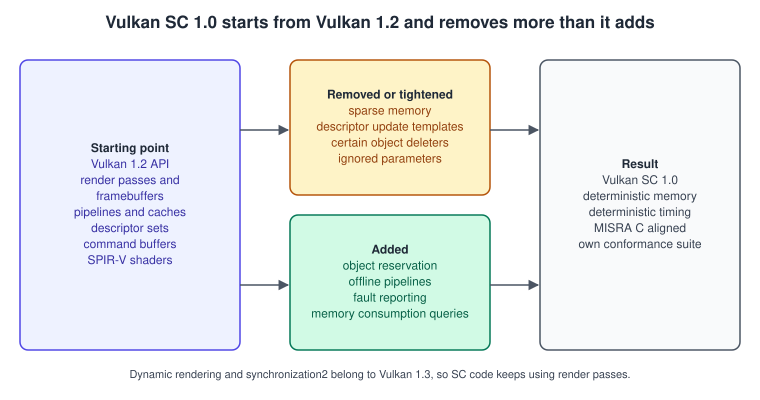
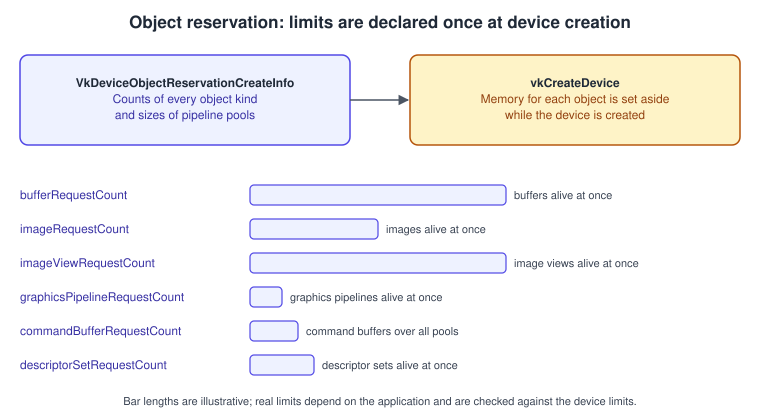
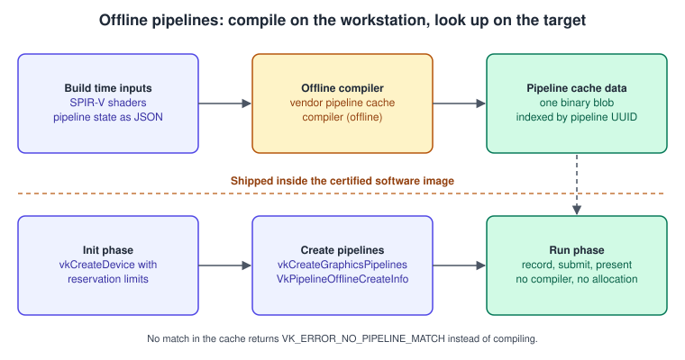

Vulkan SC and Embedded Vulkan
|
This content was generated with the assistance of AI and should be verified against the official documentation before being relied on in production. |
Most of this section teaches Vulkan as a desktop and mobile API, where the application may allocate memory whenever it likes, compile pipelines while the program runs and take a few milliseconds extra when something unusual happens. A cockpit display, a car instrument cluster or an infusion pump cannot work that way: the software must be certified, its worst-case behaviour must be predictable, and a failed allocation in the middle of a flight is not an acceptable event. Vulkan SC (the "SC" is for safety critical) is the Khronos answer: a variant of Vulkan 1.2 that removes the parts that make behaviour hard to predict and adds the parts a certification process asks for. This page explains what changes, shows the structures that matter in C, and then turns to the other embedded case, ordinary Vulkan running on small boards and display controllers.
The facts were checked in November 2026. The documented version is Vulkan SC 1.0 (the specification receives revision updates; the Khronos repository tagged revision 1.0.22 in July 2026), which is based on Vulkan 1.2, next to the Vulkan 1.4 API documented in the rest of this section (headers 1.4.3xx, LunarG SDK 1.4.363.0). Vulkan SC has its own registry, headers, loader and conformance suite, and it is a different product from the Vulkan 1.4 that ships in desktop and phone drivers. Everything here is read-only background for the Bookshelf running example (C++20, Vulkan-Hpp RAII, VMA, GLFW or SDL3, Slang shaders), which targets regular Vulkan 1.3 or later and does not run on Vulkan SC as written; the section "What the Bookshelf would change" lists what a port to SC would touch. The concepts behind explicit APIs are in Explicit vs Implicit Graphics APIs; the version baseline of the regular API is in Versions, Profiles and Extensions.
What Vulkan SC is

| Aspect | Vulkan SC 1.0 |
|---|---|
Base |
A variant of Vulkan 1.2. Its API macros are |
Design goals |
Streamlined (non-essential runtime features removed), deterministic (offline pipeline compilation, statically reserved memory, explicit resource management and synchronisation) and robust (ignored parameters and undefined behaviour removed, fault handling added, alignment with MISRA C). |
Removed |
Among others sparse memory, descriptor update templates and some object deleters. The exact list is in the Vulkan SC specification, which is a separate document from the Vulkan specification. |
Shaders |
SPIR-V 1.5, with compute shaders supported. Shaders can be written in GLSL, HLSL or Slang and compiled to SPIR-V before the offline step. |
Safety standards the design targets |
DO-178C Level A (avionics), ISO 26262 ASIL D (automotive), IEC 61508 (industrial) and IEC 62304 (medical). The API helps a certification effort; the certified artefact is the complete driver and application, not the specification. |
Conformance |
A conformance test suite derived from the Vulkan CTS. |
Because SC is built on Vulkan 1.2, features that arrived in Vulkan 1.3 are not part of the core API: dynamic rendering, synchronization2, the
extended dynamic state of 1.3 and maintenance4 are Vulkan 1.3 and later. Code that targets SC therefore still uses VkRenderPass,
VkFramebuffer and subpasses, which the reservation structure below counts explicitly (renderPassRequestCount,
subpassDescriptionRequestCount). That is the reverse of the advice in
Dynamic Rendering, where render pass objects are legacy: in SC they are the model,
because they let a driver compute memory needs ahead of time. The older books are closest to SC here: both the Vulkan Programming Guide
(VPG) and the Vulkan Cookbook (VCB) teach Vulkan 1.0 render passes, and neither mentions SC.
Two phases: initialisation and run
The central idea of SC is a program that does all of its resource planning once, at start-up, and then runs a fixed workload.
SC does not stop an application from creating and destroying objects during the run phase, but every object count is bounded by the
reservation made at device creation, and implementations can report through VkPhysicalDeviceVulkanSC10Properties whether memory
returns to a pool when an object is destroyed (recycleDescriptorSetMemory, recyclePipelineMemory) or whether it stays consumed until
the device is destroyed. A defensive design creates everything during initialisation and never destroys anything until shutdown.
Reserving objects at device creation
In regular Vulkan the driver allocates host and device bookkeeping memory as objects appear. In SC the application states upper bounds
when the device is created by chaining VkDeviceObjectReservationCreateInfo into VkDeviceCreateInfo. The driver sets the memory aside
during vkCreateDevice; on implementations where VkPhysicalDeviceVulkanSC10Properties::deviceNoDynamicHostAllocations is true it does
not allocate host memory for objects afterwards. Objects beyond a reserved count cannot be created.

| Member group | Meaning |
|---|---|
|
The pipeline caches that may be created on the device. A later |
|
Memory reserved for pipelines, as |
|
Maximum number of synchronisation and query objects alive at the same time. |
|
Maximum number of resource objects alive at once. |
|
Render pass objects and the totals of their subpasses and attachments. The subpass total must not exceed |
|
Pipeline objects and their layouts and caches. |
|
Descriptor objects. |
|
Command pools, and command buffers reserved across all pools. |
|
Swapchains. |
|
Largest mip and layer counts of any image view. They must stay within the device limits and the length of the full mip chain. |
|
Largest query count per pool and per query type. |
The most common mistake is reserving too little: every pool, view and descriptor set the application will ever hold at the same time must be counted, including those created by middleware. Reserving far too much wastes memory the safety case could use elsewhere, so the numbers are normally generated from a static inventory of the application’s objects rather than guessed.
The properties structure tells the application which behaviour the driver provides:
VkPhysicalDeviceVulkanSC10Properties member |
Meaning |
|---|---|
|
The implementation allocates host memory for objects from the reservation limits during |
|
Destroying the device returns all of its memory to the system. |
|
Several command buffers from one pool may be recorded at the same time. |
|
Command buffers can be reset and begun again from a non-initial state. |
|
The simultaneous-use usage flag is supported. |
|
Secondary command buffers can use a null or imageless framebuffer inside a render pass. |
|
Freed descriptor set or destroyed pipeline memory can be reused immediately instead of waiting for a pool reset or device destruction. |
|
Upper limits that bound the reservation values. |
|
How many faults can be recorded for |
|
Limits for command pools and command buffer data, in command buffers and bytes. |
The following C example reserves the objects of a small application, enables the SC feature structure and installs a fault callback (described later). The values are examples chosen for a fixed scene; a real project computes them from its object inventory.
#include <vulkan/vulkan.h> // the Vulkan SC headers provide the SC structures
static void onFault(VkBool32 unrecordedFaults, uint32_t faultCount, const VkFaultData* pFaults);
VkDevice createSafetyDevice(VkPhysicalDevice gpu, uint32_t queueFamily,
const void* cacheBlob, size_t cacheBlobSize,
VkDeviceSize pipelineEntrySize)
{
VkPhysicalDeviceVulkanSC10Properties sc = {
.sType = VK_STRUCTURE_TYPE_PHYSICAL_DEVICE_VULKAN_SC_1_0_PROPERTIES };
VkPhysicalDeviceProperties2 props = {
.sType = VK_STRUCTURE_TYPE_PHYSICAL_DEVICE_PROPERTIES_2, .pNext = &sc };
vkGetPhysicalDeviceProperties2(gpu, &props);
VkPipelineCacheCreateInfo cacheInfo = {
.sType = VK_STRUCTURE_TYPE_PIPELINE_CACHE_CREATE_INFO,
.flags = 0,
.initialDataSize = cacheBlobSize,
.pInitialData = cacheBlob }; // produced by the offline compiler
VkPipelinePoolSize poolSize = {
.sType = VK_STRUCTURE_TYPE_PIPELINE_POOL_SIZE,
.poolEntrySize = pipelineEntrySize, // a size the offline compiler reports
.poolEntryCount = 8 };
VkDeviceObjectReservationCreateInfo reserve = {
.sType = VK_STRUCTURE_TYPE_DEVICE_OBJECT_RESERVATION_CREATE_INFO,
.pipelineCacheCreateInfoCount = 1,
.pPipelineCacheCreateInfos = &cacheInfo,
.pipelinePoolSizeCount = 1,
.pPipelinePoolSizes = &poolSize,
.semaphoreRequestCount = 4,
.commandBufferRequestCount = 8,
.fenceRequestCount = 4,
.deviceMemoryRequestCount = 16,
.bufferRequestCount = 32,
.imageRequestCount = 16,
.imageViewRequestCount = 32,
.pipelineCacheRequestCount = 1,
.pipelineLayoutRequestCount = 4,
.renderPassRequestCount = 2,
.graphicsPipelineRequestCount = 8,
.descriptorSetLayoutRequestCount = 4,
.samplerRequestCount = 4,
.descriptorPoolRequestCount = 2,
.descriptorSetRequestCount = 16,
.framebufferRequestCount = 4,
.commandPoolRequestCount = 2,
.subpassDescriptionRequestCount = 2,
.attachmentDescriptionRequestCount = 4,
.descriptorSetLayoutBindingRequestCount = 8,
.descriptorSetLayoutBindingLimit = 4,
.maxImageViewMipLevels = 1,
.maxImageViewArrayLayers = 1,
.maxLayeredImageViewMipLevels = 1 };
VkFaultCallbackInfo faultInfo = {
.sType = VK_STRUCTURE_TYPE_FAULT_CALLBACK_INFO,
.pNext = &reserve,
.faultCount = 0, // 0 means the driver supplies the array
.pFaults = NULL,
.pfnFaultCallback = onFault };
VkPhysicalDeviceVulkanSC10Features scFeatures = {
.sType = VK_STRUCTURE_TYPE_PHYSICAL_DEVICE_VULKAN_SC_1_0_FEATURES,
.pNext = &faultInfo,
.shaderAtomicInstructions = VK_FALSE };
float priority = 1.0f;
VkDeviceQueueCreateInfo queue = {
.sType = VK_STRUCTURE_TYPE_DEVICE_QUEUE_CREATE_INFO,
.queueFamilyIndex = queueFamily, .queueCount = 1, .pQueuePriorities = &priority };
VkDeviceCreateInfo info = {
.sType = VK_STRUCTURE_TYPE_DEVICE_CREATE_INFO,
.pNext = &scFeatures,
.queueCreateInfoCount = 1, .pQueueCreateInfos = &queue };
VkDevice device = VK_NULL_HANDLE;
if (vkCreateDevice(gpu, &info, NULL, &device) != VK_SUCCESS) // pAllocator must be NULL
return VK_NULL_HANDLE;
return device;
}Several details differ from regular Vulkan. The faultCount of VkFaultCallbackInfo must be either 0 or equal to
maxCallbackFaultCount. The allocator argument of creation calls must be NULL when the driver allocates no host memory dynamically,
so SC applications do not supply the allocation callbacks that regular Vulkan applications can. Shader atomics are a feature the
application opts into (shaderAtomicInstructions in VkPhysicalDeviceVulkanSC10Features), because they change what a driver must
support. Chaining order does not matter; every structure that extends VkDeviceCreateInfo can sit anywhere in the pNext chain.
Offline pipelines
Compiling a pipeline can allocate memory and take an unpredictable time, so SC does it before the program runs. A vendor-supplied pipeline cache compiler takes the SPIR-V shaders and the pipeline state and produces a pipeline cache binary for one specific driver and device; the application ships that binary and only looks pipelines up at run time. The way the compiler is fed is described by the driver vendor; the Khronos SDK includes an emulation stack, a JSON generator layer for recording what an application builds and a simplified compiler, discussed later.

At run time two rules apply. First, vkCreatePipelineCache must use flags, initialDataSize and pInitialData that match one entry of
pPipelineCacheCreateInfos in the device reservation, the data must be compatible with the device (otherwise the call fails with
VK_ERROR_INVALID_PIPELINE_CACHE_DATA), and the cache’s contents cannot be updated after creation. Second, every pipeline creation call
chains a VkPipelineOfflineCreateInfo that identifies the pipeline to find in the cache.
VkPipelineOfflineCreateInfo member |
Meaning |
|---|---|
|
A |
|
A |
|
The size of the pipeline memory entry to use. It must be one of the sizes requested through |
If no pipeline in the cache matches, creation returns VK_ERROR_NO_PIPELINE_MATCH. If poolEntrySize is too small or the entries of that
size are used up, it fails with VK_ERROR_OUT_OF_POOL_MEMORY. With recyclePipelineMemory true, destroyed pipelines return their
entries to the pool; otherwise the total number of pipelines ever created with that entry size is what counts.
#include <string.h>
VkResult createCachedPipeline(VkDevice device, VkPipelineCache cache,
const VkGraphicsPipelineCreateInfo* base,
const uint8_t uuid[VK_UUID_SIZE],
VkDeviceSize poolEntrySize, VkPipeline* out)
{
VkPipelineOfflineCreateInfo offline = {
.sType = VK_STRUCTURE_TYPE_PIPELINE_OFFLINE_CREATE_INFO,
.matchControl = VK_PIPELINE_MATCH_CONTROL_APPLICATION_UUID_EXACT_MATCH,
.poolEntrySize = poolEntrySize };
memcpy(offline.pipelineIdentifier, uuid, VK_UUID_SIZE);
// The create info describes the same state that was given to the offline compiler.
VkGraphicsPipelineCreateInfo info = *base;
info.pNext = &offline;
return vkCreateGraphicsPipelines(device, cache, 1, &info, NULL, out);
}A consequence is that shaders are build-time inputs. The shader languages of the desktop world (GLSL through glslc, HLSL through DXC, Slang through slangc, covered in Shaders, SPIR-V and Shading Languages) still apply, but their output goes to the offline compiler as SPIR-V 1.5 rather than to the driver at run time.
Memory for command pools
Command buffers record into pool memory that SC also fixes in advance. A command pool created with
VkCommandPoolMemoryReservationCreateInfo chained into VkCommandPoolCreateInfo states how many bytes of command data the pool can
hold and how many command buffers it can create.
| Member | Meaning |
|---|---|
|
Bytes reserved for all command buffer data recorded into the pool. It must be greater than zero. |
|
Maximum number of command buffers allocated from the pool. It must be greater than zero and not more than |
The command vkGetCommandPoolMemoryConsumption reports how much of a pool a command buffer used, which lets a test run measure a
worst case and size commandPoolReservedSize with evidence instead of with a guess.
VkCommandPool createFramePool(VkDevice device, uint32_t queueFamily)
{
VkCommandPoolMemoryReservationCreateInfo reservation = {
.sType = VK_STRUCTURE_TYPE_COMMAND_POOL_MEMORY_RESERVATION_CREATE_INFO,
.commandPoolReservedSize = 64 * 1024, // bytes of recorded commands, measured in tests
.commandPoolMaxCommandBuffers = 2 };
VkCommandPoolCreateInfo info = {
.sType = VK_STRUCTURE_TYPE_COMMAND_POOL_CREATE_INFO,
.pNext = &reservation,
.queueFamilyIndex = queueFamily };
VkCommandPool pool = VK_NULL_HANDLE;
vkCreateCommandPool(device, &info, NULL, &pool);
return pool;
}Faults
A safety-critical system must detect and report that something went wrong, rather than carry on silently. SC adds two ways to receive fault information from the driver.
-
The callback.
VkFaultCallbackInfoin the device creation chain gives a function of typePFN_vkFaultCallbackFunction, which the driver calls when a fault occurs with anunrecordedFaultsflag (true when some faults were missed since the last call), a count and an array ofVkFaultData. -
The query
vkGetFaultData, which fills an array ofVkFaultDatafor a chosenVkFaultQueryBehavior, and returnspUnrecordedFaultsset to true when the log is incomplete. As with other Vulkan enumeration calls, passing a nullpFaultsreturns the number of matching faults.
Each VkFaultData carries a faultLevel (severity, a VkFaultLevel) and a faultType (a VkFaultType); the pNext chain can hold
implementation-specific data. The number of faults the driver can keep is limited by maxQueryFaultCount and the callback batch size by
maxCallbackFaultCount.
#include <stdio.h>
static void onFault(VkBool32 unrecordedFaults, uint32_t faultCount, const VkFaultData* pFaults)
{
// Keep this function short and free of dynamic allocation: it may run in a context
// defined by the safety concept (for example a monitor thread).
for (uint32_t i = 0; i < faultCount; ++i) {
fprintf(stderr, "fault level=%d type=%d\n",
(int)pFaults[i].faultLevel, (int)pFaults[i].faultType);
}
if (unrecordedFaults) {
fprintf(stderr, "some faults were not recorded\n");
}
}
uint32_t countFaults(VkDevice device, VkFaultQueryBehavior behavior)
{
VkBool32 unrecorded = VK_FALSE;
uint32_t count = 0;
vkGetFaultData(device, behavior, &unrecorded, &count, NULL); // count only
return count;
}Prior to Vulkan SC 1.0.11 the application had to provide the pFaults array for the callback; since 1.0.11 it is optional, which is why
older tutorials show a different setup than the structure documented here.
Tooling and the SDK
Khronos publishes a Vulkan SC SDK as a single installer for Linux and Windows. The 1.0.21 release bundled the loader, an emulation driver stack that lets SC code run on a desktop GPU through regular Vulkan, validation layers, a device simulation layer, pipeline cache utilities, a sample, an information tool and CMake plus Pipeline Cache Compiler integration. The emulation stack is a development aid: its compiler only packages SPIR-V and pipeline state into the cache binary and does not model a production compiler, and the validation layers cover parameter checks rather than the full set of the regular Khronos validation layer. A production driver ships its own compiler, and a certification effort relies on that driver and on the test evidence, not on the emulation. The repositories are under the KhronosGroup GitHub organisation; the specification repository is VulkanSC-Docs. The regular LunarG SDK documented in Setup: SDK and Toolchain does not contain these SC tools.
Regular Vulkan on embedded hardware
Many embedded products are not safety certified and simply need a small, efficient GPU API. The regular Vulkan 1.4 API fits there, with the usual constraints of the hardware.
-
Mesa drivers on single-board computers. The Broadcom V3DV driver in Mesa exposes Vulkan 1.3 on Raspberry Pi 4 and 5 since Mesa 24.3. Tile-based GPUs favour few render passes, small attachments and no unnecessary load operations, as described in Multithreading and Performance.
-
Windowless output. Embedded Linux systems without a window system present through the display extensions (
VK_KHR_displayand related ones) or render offscreen withVK_EXT_headless_surface; the Vulkan Guide notes that some embedded systems support Vulkan through direct-to-display presentation. The swapchain principles of Window System Integration and the Swapchain apply unchanged; only the surface creation call differs. -
Android and automotive. Android devices expose Vulkan through the HAL, and Android-based head units follow the same rules as phones; see Vulkan on Android.
-
Profiles. Profiles such as the Roadmap milestones let a product declare a guaranteed feature set; see Versions, Profiles and Extensions.
-
Memory-constrained devices. Where host memory is scarce, create devices with only the extensions and features needed, keep pipeline caches on storage, and prefer fewer, larger allocations (see Memory Heaps, Types and VMA).
| Question | Vulkan SC | Regular Vulkan on embedded hardware |
|---|---|---|
Base version |
Vulkan 1.2 |
Whatever the driver exposes (1.3 on Raspberry Pi 4 and 5 with Mesa 24.3 and later) |
Pipeline creation |
Offline, looked up by UUID |
Online, optionally cached with a pipeline cache |
Object counts |
Declared at device creation |
Unbounded in practice |
Rendering model |
Render passes and framebuffers |
Dynamic rendering recommended from 1.3 |
Fault reporting |
Callback and |
Device-lost errors and driver-specific tools |
Intended certification |
DO-178C, ISO 26262, IEC 61508, IEC 62304 |
None implied |
What the Bookshelf would change
The Vulkan Bookshelf of this section is a Vulkan 1.3 and later program. A port of its first steps (clear, triangle, textured book) to SC would touch the following, in this order:
-
Replace dynamic rendering with a render pass and framebuffers, because the 1.3 API is not in SC.
-
Remove VMA’s dynamic allocation: allocate a fixed number of
VkDeviceMemoryblocks during initialisation and sub-allocate by hand, which also means thatdeviceMemoryRequestCountis small. -
Compile the Slang or GLSL shaders to SPIR-V, feed shaders and pipeline state to the vendor compiler and load the cache blob.
-
Fill
VkDeviceObjectReservationCreateInfofrom the object inventory: one pipeline, a handful of buffers and images, one swapchain with its views and framebuffers. -
Drop run-time features: shader hot reload, pipeline creation on demand and library-based variants.
-
Wire a fault callback into the application’s monitoring.
The C++ side of the Bookshelf (RAII wrappers, discussed in Vulkan-Hpp, RAII and C++ Bindings) would also be reviewed against the coding standard of the project, since the SC specification is aligned with MISRA C.
Common mistakes
-
Treating SC as "Vulkan with a few extensions": it is a separate API variant with its own headers, loader and conformance suite.
-
Reserving counts after the fact: reservation happens at
vkCreateDeviceand cannot grow. -
Passing an allocator:
pAllocatormust beNULLwhen the driver allocates no host memory dynamically. -
Reusing the pipeline identifier for two different pipelines, or changing pipeline state in code without regenerating the cache.
-
Assuming memory comes back on destroy: check
recycleDescriptorSetMemory,recyclePipelineMemoryanddeviceDestroyFreesMemory. -
Developing only on the emulation stack: it does not prove timing or memory behaviour on the target.
Where the older books stand
| Topic | VPG and VCB | Today |
|---|---|---|
Vulkan version |
Both teach Vulkan 1.0 |
SC 1.0 is based on 1.2; the regular API is at 1.4 |
Render passes |
Core to both books |
Legacy in the regular API since dynamic rendering (1.3), still the model in SC 1.0 |
Pipelines |
Created while the program runs |
Offline in SC; online with a cache in regular Vulkan |
Safety critical use |
Not covered |
Vulkan SC 1.0 |
See also
-
Graphics Pipeline Overview and Dynamic Rendering for the regular model that SC predates